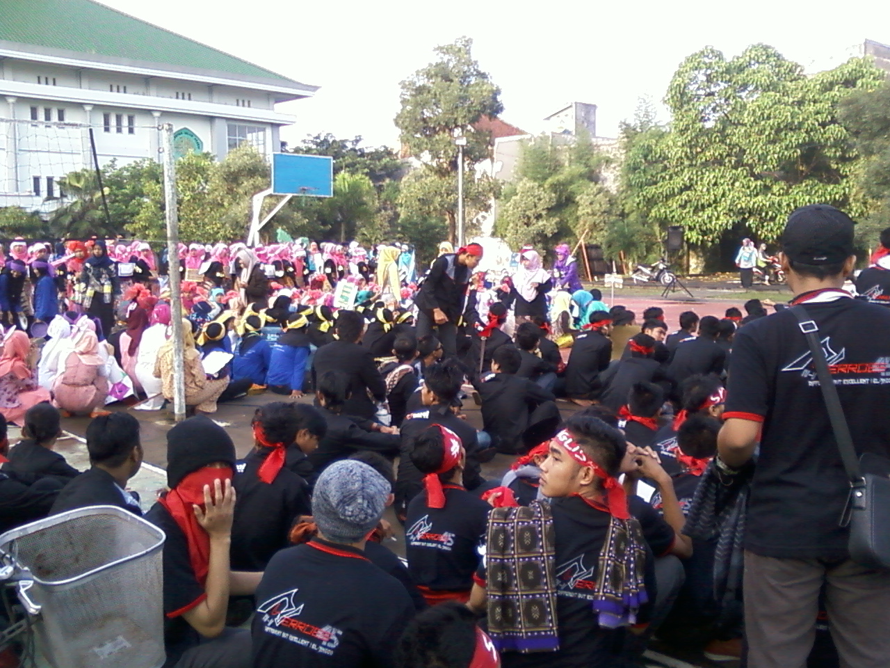

Untuk mendapatkan bakat yang tersembunyi mahasiswa UIN Malang, HMJ TI berencana mencari bakat dibidang komputer ataupun non TI
Acara diharapkan mendapatkan antusias dari warga kampus serta membawa kebaikan untuk kemslahatan umat.
acara yang insyaallah akan dilaksanakan pada tanggal 30 Desember 2015 tersebut akan dihadiri oleh bintang tamu dari terkenal seperti soimah dan Dedy corbuser, maka dari itu akan diprediksi tidak hanya warga UIN yang memeriahkan akan tetapi diprediksi warga dari luar akan ikut memriahkan.
M. Taqiuddin IY
Ratna Zubaidah
Muhammad Iqbal Muzakki
Ahmad Dzul Fikri
Hafshah Nuridz Dz
Asmarani Pratama Y. Hadad
Filza Chalid Bahreisy
Mengadakan perlombaan skill non TI
mengadakan seminar mengenai pelatihan skill IT untuk pengurus HMJ
Mengdakan penjaringan bakat dibidang IT